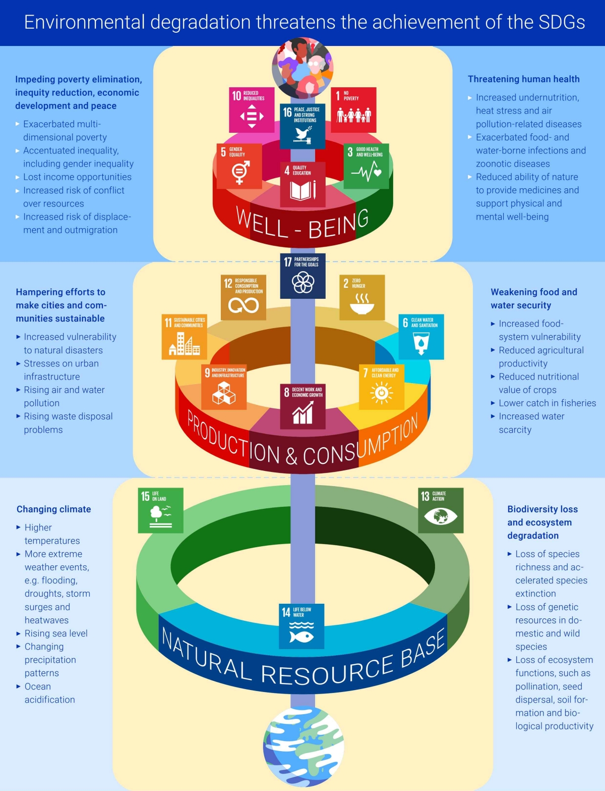
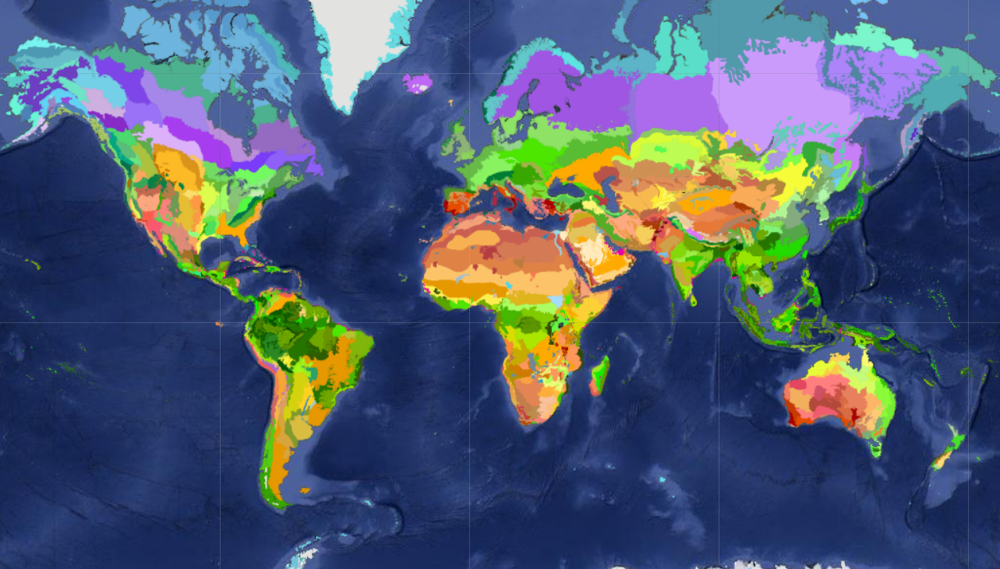
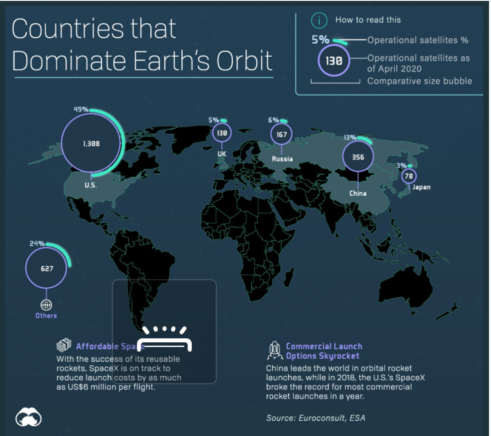
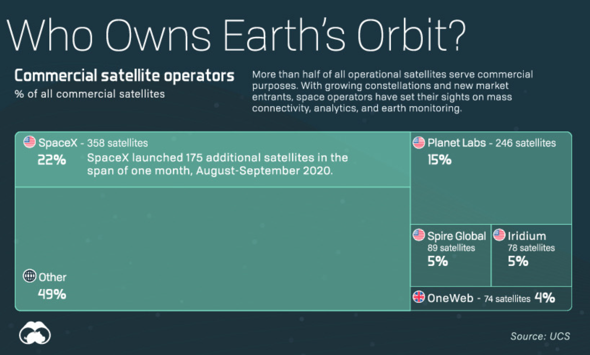
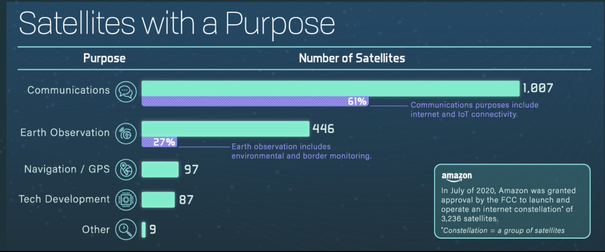

Remote Sensing and GIS
Course Code: HWRE 6375
Masumbuko Semba
Nelson Mandela African Institution of Science and Technology
2023-06-21
Introduction
Introduction
- We are in the age of data.
- Data are in are in high demand.
- SPatial data are higly needed
- Data science emerged as a professional
Why Environmental
Dependency on nature
Sustainable Development Goals (SDGs) depends on natural resource management:
- SDG 13–Climate Action
- SDG 14–Life Below Water
- SDG 15–Life On Land
Ecosystems Distribution
Geographical Information Systems
Satellite
Countries Dominance
Who own the earth
Satellite for what?
Predictions
- Nearly 10,000 satellites will be launched by 2028
Data Types
Data Types
Two main types of data exists: Vector and Raster
- Vector and raster models are both valuable for representing and analyzing spatial data.
- The choice of model depends on the nature of the data and the analysis requirements.
Vector Data Model
- The vector data model represents spatial data as discrete objects composed of points, lines, and polygons.
- It uses coordinates and topological relationships to define and analyze geographic features.
Vector data model
- Uses coordinates and topological relationships to define features.
- Well-suited for representing discrete objects and
[Insert relevant visual examples of points, lines, and polygons]
Vector data model
- There are three subcategories of vector data: point, line, and polygon
Point
- A single piece of coordinate is a point
- Represent specific locations in space.
- Examples: Cities, landmarks, sampling locations.
[Insert relevant visual examples of points, lines, and polygons]
Line
- A series of points connected to each other in line.
- Represent linear features or paths.
- Examples: Roads, rivers, pipelines
[Insert relevant visual examples of points, lines, and polygons]
Polygon
- Are created by connecting a number of lines is a polygon.
- Represent enclosed areas or regions.
- Examples: Countries, lakes, buildings.
[Insert relevant visual examples of points, lines, and polygons]
Representation of Features:
- Each feature is defined by its geometry (shape) and attributes (associated information).
- Geometry: Points are defined by coordinates, lines by a series of connected points, and polygons by a closed set of lines.
[Insert visual illustration of feature representation]
Attributes:
- Additional information associated with features.
- Examples: Name, population, area, elevation.
- Attributes are stored in a tabular format, with each row representing a feature and columns representing attribute fields.
[Insert visual representation of attribute table]
Topological Relationships:
- Vector data model supports topological relationships between features.
- Topology defines spatial relationships like adjacency, connectivity, and containment.
- Enables operations like buffering, overlay analysis, and network routing.
[Insert visual representation of topological relationships]
Advantages of Vector Data Model:
- Accurate representation of real-world objects.
- Efficient for representing discrete features.
- Supports topological relationships and spatial analysis.
- Flexibility in data capture and editing.
Limitations of Vector Data Model:
- Higher storage requirements for complex datasets.
- Difficulty in representing continuous phenomena (e.g., elevation)..
- Challenges in representing features with irregular shapes.
Raster Data Model
- The raster data model represents spatial data as a grid of cells or pixels, where each cell stores a single value or attribute.
- It is well-suited for representing continuous phenomena and regularly spaced data.
Components of Raster Data: Cells (Pixels):
- Raster data is divided into a grid of cells or pixels.
- Each cell represents a specific location on the Earth’s surface.
Components of Raster Data: Cell Size and Resolution:
- Cell size refers to the area covered by each cell.
- Resolution refers to the level of detail or the size of the smallest discernible feature.
[Insert visual representation of cells and cell size]
Components of Raster Data: Attribute Values:
- Each cell stores a value representing a specific attribute or property.
- Examples: Elevation, temperature, vegetation index.
[Insert visual representation of attribute values]
Advantages of Raster Data Model:
- Efficient storage for large datasets.
- Suitable for analyzing continuous data.
- Supports various types of spatial analysis operations like overlay and proximity.
- Well-suited for remote sensing and satellite imagery analysis.
Limitations of Raster Data Model:
- Less accurate representation of complex shapes and boundaries.
- Data loss due to cell resolution, which may result in generalization or loss of detail.
- Difficulty in representing features with irregular shapes.
Raster Data Formats:
- Raster data can be stored in various file formats, such as TIFF, JPEG, and GeoTIFF.
- These formats include both the spatial data (grid) and attribute information.
[Insert visual representation of raster data format icons]
Applications of Raster Data: Digital Elevation Models
- Used to represent terrain and elevation data.
- Essential for hydrological modeling, slope analysis, and viewshed analysis.
Applications of Raster Data: Satellite Imagery Analysis
- Raster data from satellites used for land cover classification, change detection, and vegetation analysis.
Applications of Raster Data: Climate Modeling
- Raster data utilized to model temperature patterns, precipitation levels, and climate change scenarios.
Important
The raster data model is widely used for representing and analyzing spatial data, particularly for continuous phenomena.
Raster Data Model
Raster data, also known as grid data, is a spatial data type that is created by taking photos of the earth from the sky. Raster data is stored as a grid of pixels( sometimes they are called cells), where the grid is an array of rows and columns. Satellite images and aerial photographs are the perfect examples of raster data.
Advantages of Raster Model:
- Efficient storage for large datasets.
- Suitable for analyzing continuous data (e.g., elevation, temperature).
- Supports spatial analysis operations like overlay and proximity.
Limitations of Raster Model:
- Less accurate representation of complex shapes and boundaries.
- May result in data loss due to cell resolution.
- Difficult to represent features with irregular shapes.
Data Sources
We will be getting data from:
???
Thanks!
Slides created via the R packages: Quarto
The chakra comes from remark.js, knitr, and R Markdown.